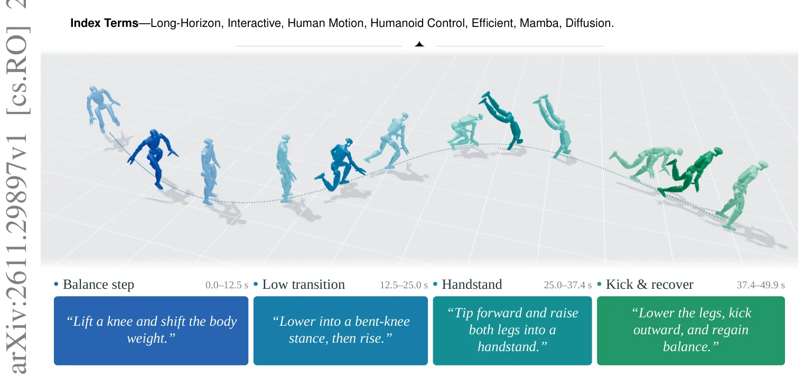
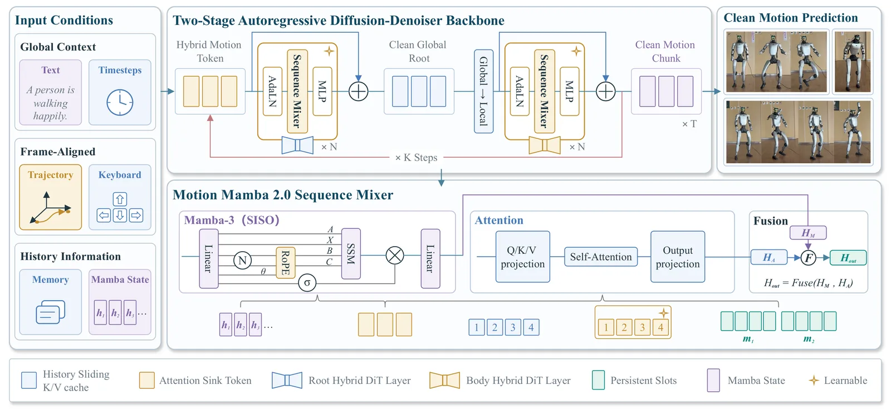
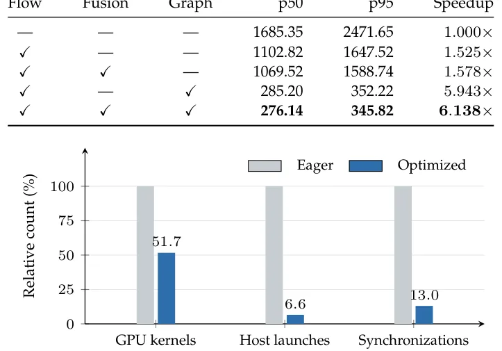
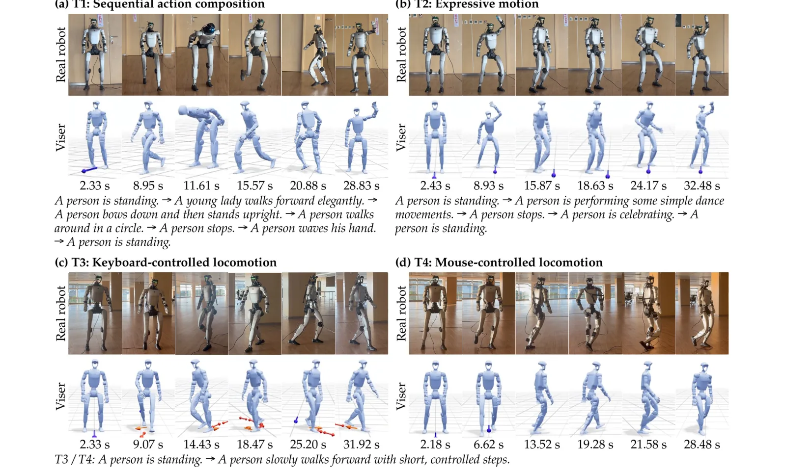

O Desafio do Contexto e da Latência em Controle Interativo
Geração de movimento humanoide para robótica interativa exige mais do que síntese offline. Um sistema útil deve interpretar instruções de texto em mudança, acomodar restrições espaciais e continuar a partir do movimento já produzido, tudo isso em tempo real. Métodos autoregressivos tradicionais geram movimento janela por janela, mas enfrentam dois obstáculos fundamentais: a perda de contexto histórico e a sobrecarga computacional da inferência.
Em abordagens baseadas em difusão autoregressiva, o acesso ao histórico distante é limitado por caches de atenção de tamanho fixo. Isso força o modelo a esquecer eventos antigos, prejudicando a coerência em sequências longas. Alternativamente, manter um cache ilimitado aumenta exponencialmente o custo de armazenamento e computação. Além disso, o processo de denoising repetido para cada nova janela introduz uma latência significativa, inviabilizando o controle interativo responsivo.
Modelos de Espaço de Estado (SSMs), como o Mamba, oferecem uma alternativa ao armazenamento explícito de tokens históricos, resumindo a sequência em um estado recorrente compacto. No entanto, um estado comprimido e um cache de atenção expõem o histórico de maneiras diferentes: o primeiro carrega contexto evolutivo, enquanto o último permite recuperação direta. O desafio é integrar esses dois paradigmas para permitir controle espacial preciso e manutenção de contexto de longo prazo sem comprometer a velocidade.

A Arquitetura Híbrida: Mamba, Atenção e Memória Persistente
O Motion Mamba 2.0 propõe uma arquitetura de difusão autoregressiva baseada em Mamba para o corpo raiz (root-body), integrando atenção local, estados recorrentes resumíveis e uma Memória de Conteúdo Persistente (PCM). A PCM é o componente central que resolve a tensão entre contexto global e controle local. Ela transforma o histórico de movimento comprimido nos estados recorrentes do Mamba, junto com mudanças de estado e características condicionadas por texto, em slots de conteúdo dinamicamente atualizados.
Esses slots de conteúdo são acessíveis à atenção local durante o processo de denoising. Isso permite que o modelo acesse informações históricas relevantes sem a penalidade computacional de processar toda a sequência de tokens. A arquitetura é dividida em dois estágios: uma rede raiz que prevê a trajetória global e um denoiser de difusão que gera a pose do corpo inteiro, condicionado pelas características locais da raiz.
O treinamento é realizado de forma conjunta, com o Mamba-3 e a PCM habilitados desde a inicialização. O codec de movimento G1 permanece congelado, enquanto as características de texto em cache fornecem o condicionamento. O objetivo de treinamento minimiza uma função de quatro termos, utilizando AdamW com um tamanho de lote global de 512, garantindo que o modelo aprenda a equilibrar a precisão espacial e a coerência temporal.

Mecanismo de Inferência: Otimizações de Baixo Nível
Além da inovação arquitetural, os autores desenvolvem um esquema de execução especializado para habilitar inferência eficiente. A latência de inferência é crítica para sistemas interativos, e o Motion Mamba 2.0 implementa três otimizações principais: replay de CUDA Graphs, kernels fundidos (fused kernels) e simplificação do fluxo de execução. Essas técnicas visam reduzir a sobrecarga do sistema sem alterar a lógica canônica de atualização do histórico.
O replay de CUDA Graphs permite capturar a sequência de operações do GPU e executá-las novamente com overhead mínimo, essencial para loops de inferência repetitivos. Os kernels fundidos combinam operações do Mamba (como transições A/DT) em etapas de pré-processamento, reduzindo a comunicação de memória. A simplificação do fluxo de execução remove etapas desnecessárias no pipeline de denoising.
Essas otimizações são projetadas para preservar os estados históricos comprometidos e os outputs gerados, garantindo que a aceleração não comprometa a fidelidade do modelo. A combinação dessas técnicas resulta em uma redução significativa da latência, tornando viável a execução em hardware de consumo, como a RTX 4090, para aplicações de controle em tempo real.
Avaliação: Qualidade, Arquitetura e Eficiência
A avaliação do Motion Mamba 2.0 abrange três perspectivas: qualidade de geração, eficácia arquitetural e eficiência de inferência. Nos benchmarks de horizonte curto e longo no HiPHI retargeted, o modelo demonstra controle terminal preciso em rollouts de até 39.52 segundos. Métricas como Root CE (Erro Quadrático Médio da Raiz) e End CE (Erro da Extremidade) mostram superioridade significativa em comparação com métodos anteriores como Go-to-Zero, DreamControl e MotionStreamer.
Em comparações de horizonte curto no BONES Seed e HumanML3D retargeted, o modelo mantém forte controle espacial e correspondência texto-movimento. As ablações arquitetônicas isolam as contribuições do modelamento recorrente e da PCM, confirmando que a memória persistente é crucial para estender o controle espacial sem degradar a qualidade do movimento. A ausência de PCM resulta em perda de contexto e precisão espacial reduzida.
Os resultados quantitativos destacam a capacidade do modelo de lidar com instruções complexas e mudanças de direção. Por exemplo, no HiPHI, o Motion Mamba 2.0 alcança um Root CE de 7.55 cm e End CE de 13.64 cm em 39.52 segundos, os menores valores entre os métodos avaliados. Isso indica uma alta fidelidade na execução de trajetórias longas e complexas, um requisito essencial para robótica humanoides interativos.

Validação no Mundo Real: Unitree G1
Para validar a utilidade prática, os autores realizam extensas avaliações no robô humanoide Unitree G1. Os experimentos demonstram composição de ações guiadas por texto, movimento expressivo e locomoção interativa via teclado e mouse. O sistema integrado de geração e rastreamento (SONIC) permite que o robô execute sequências de comandos com alta precisão e estabilidade.
Nos testes de conclusão de tarefas, o sistema alcançou sucesso completo em 94 de 100 tentativas, sem quedas ou intervenções humanas. A latência de resposta para eventos espaciais foi medida em cerca de 351 ms (p50) para controle via teclado e 360 ms para mouse, permitindo uma interação fluida. O rastreamento de trajetória e a estabilidade da postura foram mantidos dentro de limites aceitáveis para operações práticas.
Os resultados qualitativos mostram o robô realizando movimentos como caminhar para frente, virar à esquerda, realizar artes marciais e interagir com o ambiente. A capacidade de alternar entre instruções de texto e controles espaciais sem perder o equilíbrio ou a coerência do movimento destaca a robustez do Motion Mamba 2.0 em cenários dinâmicos e imprevisíveis.

Limitações e Escopo
Apesar dos avanços, o paper apresenta limitações inerentes ao escopo do estudo. A avaliação de inferência foi realizada em uma RTX 4090, um hardware de alto desempenho que pode não estar disponível em todos os dispositivos embarcados. A latência de 276 ms, embora significativa, ainda pode ser um gargalo para aplicações que exigem reações instantâneas em ambientes altamente dinâmicos.
Além disso, o modelo foi treinado e avaliado em um codec de movimento específico (G1), o que levanta questões sobre a generalização para outras topologias humanoides ou para avatares digitais com diferentes graus de liberdade. A dependência de um codec congelado limita a flexibilidade do sistema para adaptações rápidas a novas estruturas corporais sem re-treinamento.
Outra limitação é a complexidade da arquitetura híbrida. A integração de Mamba, atenção local e PCM requer uma implementação cuidadosa e otimizada, o que pode aumentar a barreira de entrada para pesquisadores e desenvolvedores. A ablação dos componentes de otimização mostra que cada parte contribui para a eficiência, mas a remoção de qualquer uma delas pode degradar significativamente o desempenho, tornando o sistema menos robusto a variações de implementação.
Conclusão: Um Passo em Direção à Interatividade Real
O Motion Mamba 2.0 representa um avanço significativo na geração de movimento humanoide de longo prazo e controle interativo. Ao combinar a eficiência de modelamento temporal do Mamba com a precisão da atenção local e a memória persistente, o modelo supera as limitações de cache de atenção e latência de inferência. Os resultados no Unitree G1 demonstram a viabilidade prática da abordagem para aplicações robóticas reais.
Este paper não propõe uma revolução única, mas uma integração cuidadosa de técnicas existentes para resolver problemas específicos de contexto e latência. A contribuição principal reside na arquitetura híbrida e nas otimizações de inferência, que juntos permitem um controle responsivo e preciso. Para a comunidade de robótica e animação, isso abre caminho para sistemas mais interativos e adaptáveis.
Os autores concluem que a memória persistente e os estados recorrentes resumíveis são essenciais para estender o controle espacial sem comprometer a eficiência. O trabalho destaca a importância de considerar não apenas a qualidade do movimento gerado, mas também a infraestrutura de execução necessária para torná-lo utilizável em tempo real. O Motion Mamba 2.0 serve como um ponto de referência para futuras pesquisas em geração de movimento autoregressiva e controle robótico.
O que fica
- Motion Mamba 2.0 usa uma arquitetura híbrida Mamba-Atenção com Memória Persistente (PCM) para manter contexto de longo prazo em geração de movimento humanoide.
- O sistema atinge latência de inferência de 276 ms em RTX 4090, um speedup de 6.138x, permitindo controle interativo responsivo via texto e comandos espaciais.
- Avaliações no robô Unitree G1 mostram 94% de sucesso em tarefas complexas, com alta precisão no rastreamento de trajetórias e estabilidade postural.
- O paper destaca que eficiência e precisão são alcançáveis simultaneamente através de otimizações de baixo nível, como CUDA Graphs e kernels fundidos.
Paper original: Motion Mamba 2.0: Autoregressive Diffusion Mamba for Long-Horizon Humanoid Control
Comentários
Nenhum comentário ainda. Seja o primeiro.